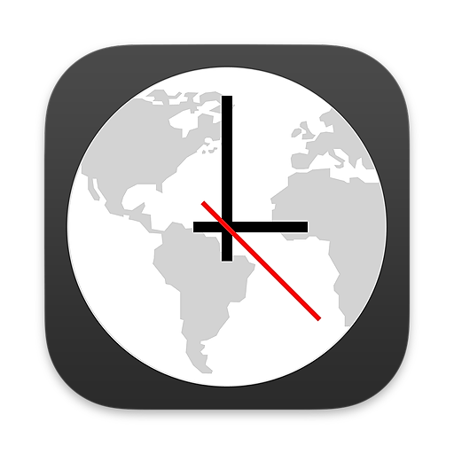

World Clock Widgets
Customizable Time Zone Widgets
App Details
Name: World Clock Widgets
Subtitle: Customizable Time Zone Widgets
Developer: Adam Overholtzer, owner of Overdesigned, LLC. Adam is an indie developer and stay-at-home dad living in California.
Platform: iOS 14.4+, macOS 11.2+
Price: Free download; US$3.99 one-time purchase to upgrade
Description
Check the time, anytime! Track the local time in cities across the world, right from your Home or Lock screen. Add cities to World Clock and select the analog or digital clocks. Then check the World Clock widget whenever you need to know the time.
- Attractive analog and digital clock displays, with options to display seconds and 24-hour time.
- Simple UI for adding and managing cities. Search or browse 10,000+ cities by name.
- Widgets are available in many sizes and styles, including Lock Screen, Home Screen, and Today widgets.
- Includes easy instructions for adding the Widget to your home and lock screens.
- Rename a city to create a custom clock, e.g., “Grandma’s House”.
- Get your local time using location (GPS).
- Daylight hours shown visually, based on actual sunrise and sunset times.
- One-time purchase to remove ads and unlock extra features — no subscriptions!
Screenshots